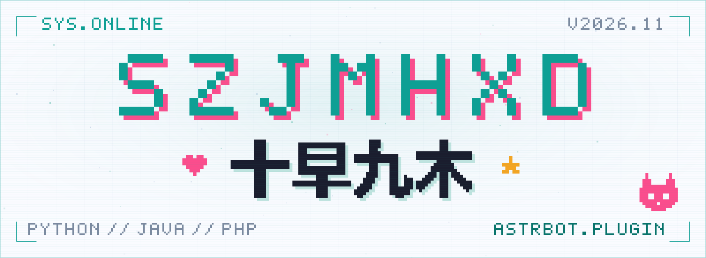
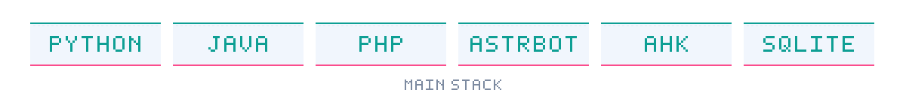
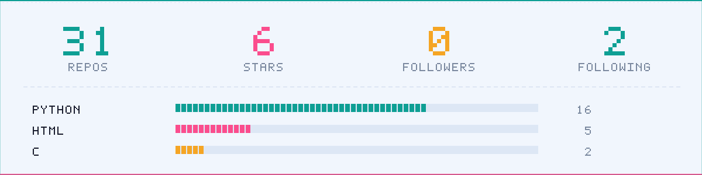
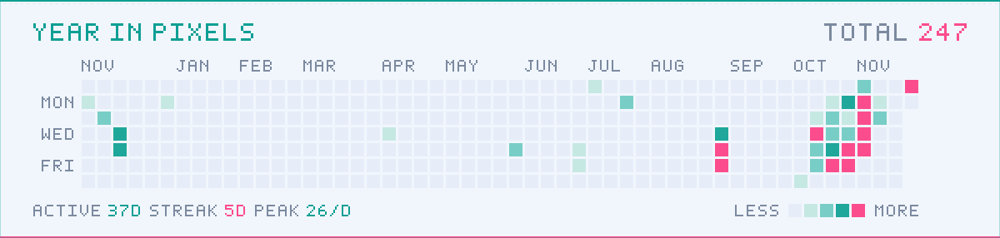
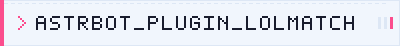
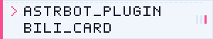
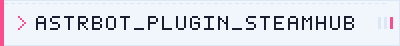
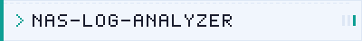
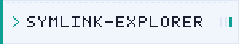
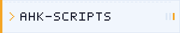

- AstrBot 插件：
lolmatch赛事推送、bili_card链接卡片、steamhubSteam 好友动态 - 自用小工具：
nas-log-analyzer群晖审计日志检索、symlink-explorerWindows 软链接管理 - AHK 脚本：
ahk-scripts随手加，最近补了小米妙享的右键返回与中键回桌面 - 博客：szjmhxd.github.io 不定期记点实现细节
最后更新 2026.11



| 项目 | 说明 |
|---|---|
 | 英雄联盟职业赛事查询与定时推送：赛程、赛果、逐局数据，支持 @ 提醒与可提醒时段 |
 | 识别 B 站视频 / 番剧 / 直播 / 专栏 / 动态 / 音频等链接，渲染成图文卡片并附可复制链接 |
 | 通过 Steam Web API 导入好友名单，按序号绑定群成员，推送上下线与开玩提醒 |
 | 群晖 NAS 审计日志的本地可视化检索：清洗去重、按文件追踪操作轨迹、SQLite 查询，纯标准库 |
 | Windows 软链接管理器：全盘扫描 reparse point、工作区卷校验、分类显隐，纯标准库 |
 | AutoHotkey v2 自用脚本合集，MathInput 可在任意输入框敲算式按 = 直接出答案 |